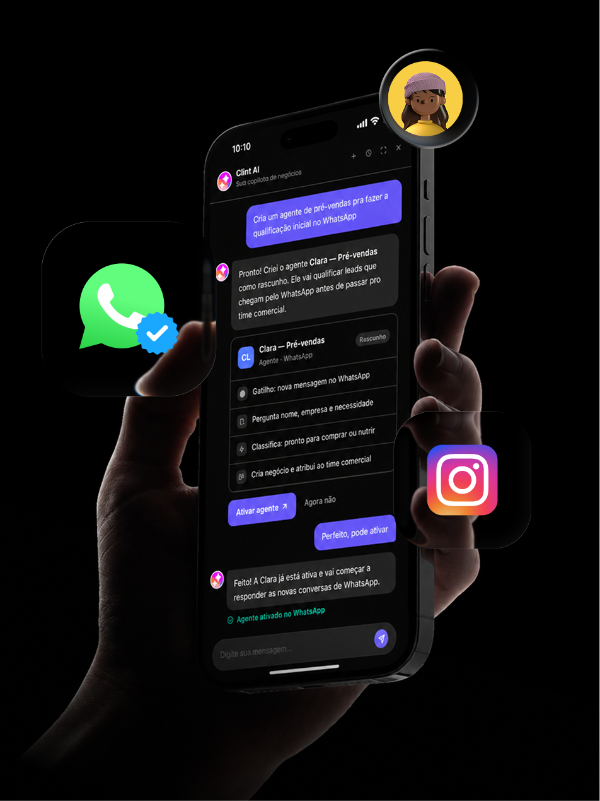

Quem respondeu?
Sem uma visão do time, fica difícil saber quem assumiu cada contato.
“Você já falou com ela?”“Achei que era com você.”
Centralize o WhatsApp da equipe e acompanhe as negociações no CRM. Seu time atende com contexto. Você enxerga a operação.
Você cobra retorno, pede print e tenta descobrir o que está em negociação. Quando o atendimento fica espalhado, uma conversa esquecida pode ser uma venda que não acontece.
Sem uma visão do time, fica difícil saber quem assumiu cada contato.
Conversas sem retorno e negociações sem próximo passo ficam fora do radar.
O histórico não deveria depender do celular de uma pessoa.
Distribua as conversas e defina quem cuida de cada atendimento.
Crie oportunidades, atualize etapas e registre o valor da negociação sem sair do atendimento.
Acompanhe o funil e identifique conversas que precisam de atenção.
Quando o responsável muda, o próximo continua com o contexto da conversa.
Configure um agente de IA para responder fora do horário, tirar dúvidas e qualificar o contato. Quando o vendedor assumir, encontra o histórico e pode seguir com o atendimento.
Interesse: planos para a equipe
Próximo passo: atendimento comercial
Operações diferentes.
IA e time trabalhando juntos.
Com um agente de qualificação que só passa para o vendedor quem tem perfil.
Ver resultado na Clint ↗Com agentes de recuperação de vendas e qualificação no WhatsApp.
Ver resultado na Clint ↗Com o teste de um agente de atendimento no WhatsApp, sem humano online.
Ver resultado na Clint ↗Resultados divulgados pela Clint. Cada operação tem seu próprio contexto.
Entenda o que muda
na rotina do seu time.
A proposta é conectar o número da sua operação. A equipe orienta os requisitos e o processo de conexão à API oficial da Meta.
A conexão depende da configuração atual do seu número. Confirme com a equipe as condições de migração ou coexistência para o seu caso.
O atendimento fica em uma interface de conversas, com o CRM ao lado. O teste ajuda seu time a experimentar a rotina antes de decidir.
Os valores dependem do plano e da configuração da sua operação. Fale com a equipe da Clint para conhecer os planos e o que está incluído.
Coloque conversas, equipe e negociações no mesmo lugar. Experimente a Clint na sua operação.
Testar 7 dias grátisAgentes de IA + WhatsApp + CRM